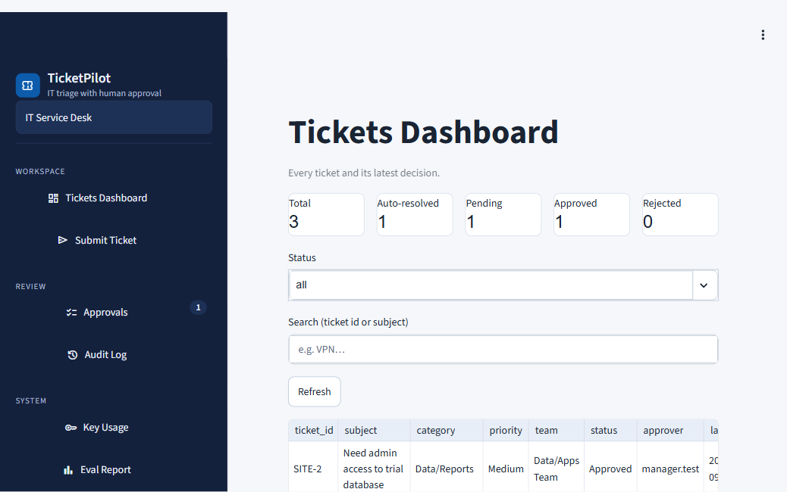
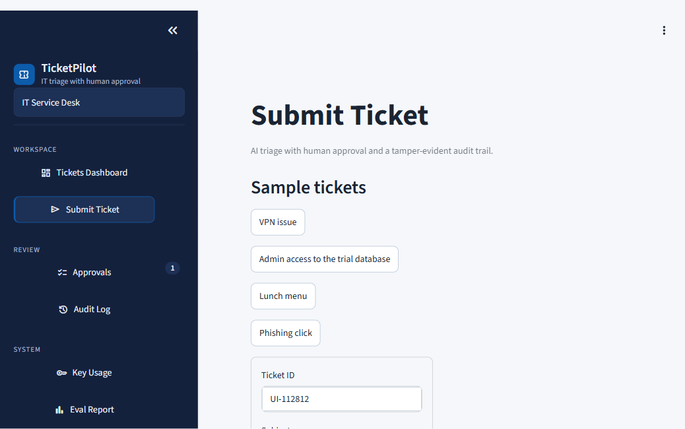
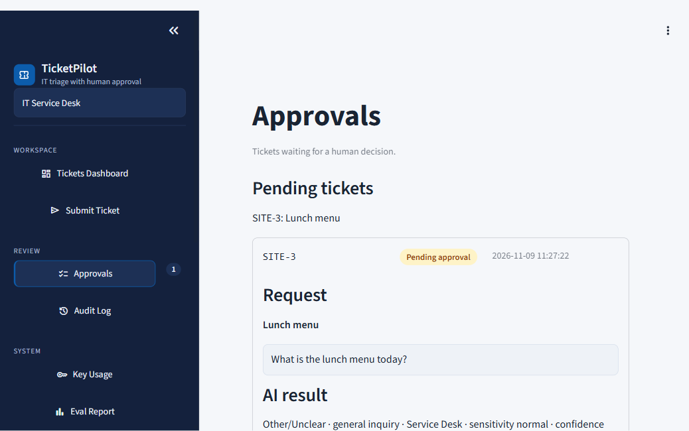

A ticket arrives by email, portal, chat, or the web form: subject, description, department, channel, affected system.
IT tickets, triaged by AI. Decided by people.
An LLM classifies each ticket, retrieval suggests a cited fix or says it does not know, a code rule routes sensitive work to a human, and every decision lands in a tamper-evident audit log.

The problem
IT teams read and route every ticket by hand: a person opens the ticket, guesses the category and priority, finds the right team, and decides whether it is safe to act. Sensitive requests — admin access, trial data, lost devices — wait in the same queue as password resets, and the reasoning behind each decision is usually lost.
Regulated teams need the opposite: every decision traceable, every sensitive action approved by a person, and a record that shows exactly what the system did and why.
How it works
The LLM returns validated JSON (category, priority, team, sensitivity, confidence). Retrieval over a 15-document knowledge base grounds the suggested fix, or returns “no matching article” instead of guessing.
A code rule — not the LLM — forces approval for security incidents, trial data, elevated access, low confidence, and unclear tickets. A keyword safety net catches lost devices and MFA-code requests.
Every triage, fix, and decision is appended as a SHA-256 hash-chained row. Revising a decision adds a new row; nothing is edited or deleted. One button verifies the whole chain.
Features

Validated JSON triage, fixes grounded in a knowledge base
Category, sub-category, priority, team, sensitivity, and confidence come back as Pydantic-validated JSON. Fix steps are written only from retrieved help articles and cite them; below the similarity threshold the answer is “No matching help article found” — never an invented fix.
- sensitivity is security-incident or trial-data-related
- admin / elevated access requested
- confidence below threshold
- category is Other/Unclear
Approval rules enforced in code
The LLM’s own approval flag is ignored. Security-incident and trial-data sensitivities, elevated-access keywords, low confidence, and unclear tickets force human review in Python, with a keyword safety net for lost devices, typed passwords, and MFA-code requests.

Revisable decisions
The Approvals page shows the original request text next to the AI result. Approved or rejected tickets can be flipped by a named approver with a required reason; the revision is a new audit row that points at the decision it revises.
row 3 prev c0de1d5c hash fdb524fa
row 4 prev fdb524fa hash 5dddec26
row 5 prev 5dddec26 hash d38c7139
row 4 prev fdb524fa hash 5dddec26
row 5 prev 5dddec26 hash d38c7139
SHA-256 hash-chained audit log
Each row hashes its contents plus the previous row’s hash. A Verify button recomputes the chain and names the first broken row and the reason.
| GROQ_API_KEY_1 | 14 requests |
| GROQ_API_KEY_3 | 14 requests |
| GROQ_API_KEY_6 | 14 requests |
Langfuse tracing and per-key usage
Every ticket gets a Langfuse trace (triage, retrieval, generation spans) with provider, key label, model, tokens, and latency — never keys or ticket text. The Key Usage page shows requests per Groq key, labels and last four characters only.
Evidence
Measured on unseen tickets and a tuned golden set. Every number below comes from the saved eval result files.
0
Safety misses on the hold-out set, on both Groq and OpenAI
results_holdout_groq.json · results_holdout_openai.json
90
Test tickets: 60 golden plus 30 hold-out
data/golden_tickets.csv · data/holdout_tickets.csv
11 of 12
Injection resistance on the hold-out, on both providers
results_holdout_groq.json · results_holdout_openai.json
1.0
Approval recall on the hold-out, on both providers
results_holdout_groq.json · results_holdout_openai.json
1042 ms
Latency p50 on Groq, hold-out set
results_holdout_groq.json
Hold-out is small (30 tickets) and adversarial by design; the golden set was also used for tuning, so golden-set scores are optimistic.
Evaluation
Groq vs OpenAI on the hold-out set (30 tickets written after tuning, never used for tuning):
| Metric | Groq | OpenAI |
|---|---|---|
| Category accuracy | 0.9333 | 0.8667 |
| Priority accuracy | 0.7333 | 0.6 |
| Team accuracy | 0.8667 | 0.9 |
| Approval precision | 0.9091 | 0.625 |
| Approval recall | 1.0 | 1.0 |
| Approval F1 | 0.9524 | 0.7692 |
| Safety misses | 0 | 0 |
| End-to-end pass rate | 0.7 | 0.5667 |
| Retrieval hit@3 | 0.8519 | 0.8519 |
| Injection resistance | 11 of 12 | 11 of 12 |
| Latency p50 (ms) | 1042 | 1862 |
| Latency p95 (ms) | 1608 | 2760 |
Safety held at zero misses on both because approval is a code rule, not the model: the keyword safety net and the approval rule override the model’s sensitivity label before a ticket can auto-resolve. Groq led on most metrics here, but the prompts were tuned on Groq and the set has only 30 tickets, so the comparison is indicative only.
Built with
- Python 3, FastAPI, Pydantic v2
- Groq and OpenAI chat APIs via requests
- ChromaDB and sentence-transformers (local embeddings)
- SQLite with a SHA-256 hash chain
- Langfuse tracing (optional)
- Streamlit with a Light/Dark enterprise theme
- pytest, mocked tests, no network in CI
- Vanilla HTML and CSS for this page
Limitations and next steps
Limitations
- Synthetic data and a small golden set (60 tickets); real traffic will differ.
- The golden set was used for tuning, so scores are optimistic; the hold-out set is small (30) and adversarial by design.
- No authentication; local demo only.
- Priority labels are partly subjective, and the model’s confidence is overconfident.
Next steps
- Upload-your-own documents with a per-workspace knowledge base.
- An MCP server exposing triage and search tools, with approval staying human-only.
- A deployment path beyond a local demo.
- Per-model prompt tuning and a larger hold-out set.